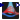
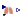

| Name | Description |
|---|---|
| RespiratoryUnit | Lungs respiratory unit |
|  LungBloodFlow | |
|  Angiotensine2 | |
| PulmonaryCirculation |
Lungs respiratory unit
Extends from Physiolibrary.Icons.PulmonaryCirculation.
| Name | Description |
|---|---|
| Ventilation | |
| replaceable package Air | Air medium model |
| AirVolume_initial | Initial volume of alveolar space [m3] |
| Air_initial[Air.nS] | Initial composition of air inside alveoli [1] |
| FunctionalResidualCapacity | Functional residual capacity [m3] |
| TotalCompliance | Pulmonary compliance [m3/Pa] |
| ResidualVolume | Residual volume [m3] |
| TotalCapacity | Total Capacity [m3] |
| BaseTidalVolume | Base Tidal Volume [m3] |
| TotalResistance | Total airways resistance [(Pa.s)/m3] |
| Perfusion | |
| replaceable package Blood | Blood medium model |
| CapillariesVolume_initial | Initial volume of blood in capillaries [m3] |
| Blood_initial[Blood.nS] | Initial composition of blood [1] |
| CapillariesZeroPressureVolume | Maximal volume of blood capillaries zero at zero blood pressure inside [m3] |
| CapillariesCompliance | Blood capillaries compliance [m3/Pa] |
| CapillariesConductance | Blood capillaries conductance [m3/(Pa.s)] |
| ArteriesConductance | Blood arteries conductance [m3/(Pa.s)] |
| Diffusion | |
| Diffusion | Gasses diffussion [mol2.s-1.J-1] |
| Name | Description |
|---|---|
| thoraxPressure | [Pa] |
| volume | [m3] |
| airways[nPorts] | |
| blood_in | |
| blood_out | |
| Ventilation | |
| replaceable package Air | Air medium model |
| Perfusion | |
| replaceable package Blood | Blood medium model |
Calculation of blood flow fraction through ventilated alveoli.
Extends from Physiolibrary.Icons.LungShunt.
| Name | Description |
|---|---|
| BasicRLShuntFraction | basic percentage of total blood flow not exposed to lung air [1] |
| RightHemithorax_Pressure | [Pa] |
| LeftHemithorax_Pressure | [Pa] |
| PressureOnInflation[:, 3] | |
| PressureGradientOnFlowDist[:, 3] |
| Name | Description |
|---|---|
| CardiacOutput | [m3/s] |
| AlveolarVentilated | [m3/s] |
Extends from Physiolibrary.Icons.Lungs.
| Name | Description |
|---|---|
| busConnector | |
| Renin | |
| Angiotensine2 |
Blood volume (and pressures) distribution between
Blood flow through ventilated alveoli.
Extends from Physiolibrary.Icons.PulmonaryCirculation.
| Name | Description |
|---|---|
| replaceable package Blood |
| Name | Description |
|---|---|
| replaceable package Blood | |
| q_in | Blood inflow |
| q_out | Blood outflow |
| busConnector | signals of organ bood flow resistence |